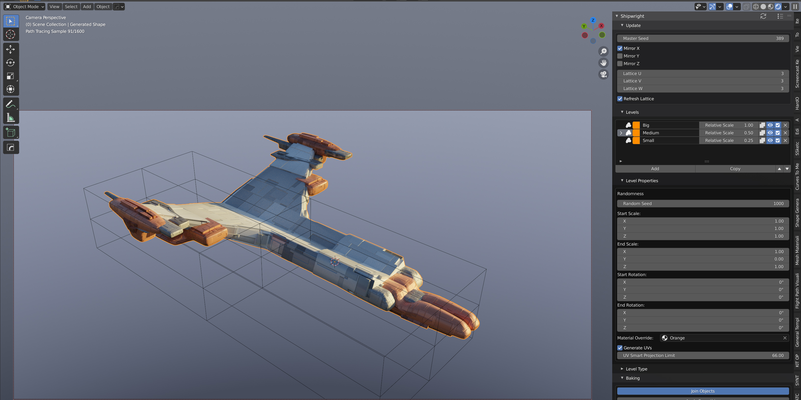

The Shipwright V2 documentation
Automatically create sci fi objects with The Shipwright: a Blender add-on that combines the Shape Generator and the Plating Generator add-ons into one custom set up.
Features
Create a wide range of objects just from a single number.
Save set ups you like with the Presets feature.
Dynamically change parameters and the objects will automatically update.
Edit the objects using Blender’s existing toolset.
Customize the materials to suit your needs.
Customize the shape with an editable lattice cage created around the object.
All driven from one Panel based interface.
Combine objects you already have with the new Levels System - not just generated ones.
Export your object as a joined up Mesh with Smoothing and Baking options.
Render out multiple variations with an ‘Iterator’ mode (inspired by Chipp’s idea for KIT OPS SYNTH)
New Simpler installation - now no need for animation nodes.